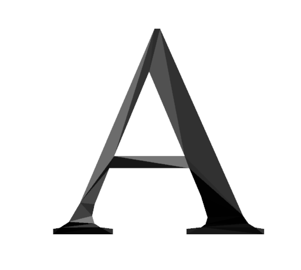
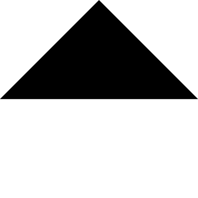

- Tue 10 May 2011
- Plasmonics
- #electromagnetism, #FDTD, #MEEP, #octave, #photonics, #Plasmonics

In MEEP (1.1.1), dielectric structures are often created by constructive geometry (adding and subtracting primitive shapes). The primitive shapes that are allowed are blocks, cylinders, ellipsoids and cones. To create a complex shape, one has to decompose the geometry into these primitive shapes. Over the weekend, I was wondering if it was possible to somehow create any complex shape in 2d without figuring out the exact positions and operations with the available primitive shapes. Here I report how I solve this problem.
The first thing I figured out was to create a 2d triangle with known vertices using a certain primitive shape. One can cut a cone to create a triangle, but that would limit me to isosceles triangle. My very smart colleague (Mengqian Lu) suggested me to cut a block/brick object with non-orthogonal axes such that you get a triangle.
In meep, block object requires, 1) the lengths of the block edges along each of its three axes 2) the directions of the axes of the block and 3)center.
A triangle with known (x1,y1,0), (x2,y2,0) and (x3,y3,0) can be represented with a block (with possible non-orthogonality) element by modifications as shown in the figure. I pick a random point "E" which is not in the plane of my triangle and assume it as origin of the block. Then the vectors corresponding to axes of block are given by EA, EB, EC vectors, sizes are given by |EA|,|EB|,|EC| and the center of the block is OE+0.5*(EA+EB+EC).
Triangle in Meep using block primitive object

To test this, I wrote a octave code which produces a meep code that that can be executed to create a triangle with vertices of (-10,0,0), (10,0,0) and (0,10,0). The result of compiling the meep code and exporting the dielectric distribution is shown below. The length of the simulation domain is 20 units in both x and y directions.
Triangle shape implemented in meep using block primitve object.

With this information of incorporating a single triangle in meep, I can now obtain complex 2d shapes in meep. I start by writing a file that contains information regarding points that make up my structure and do a constrained delaunay triangulation.
One can use matlab (versions >2009) to do such constrained delaunay triangulation. However, many of us (poor graduate students :( ) do not have access to matlab. I figured out that constrained delaunay triangulation can be done by using Triangle package, which is free. After I compile this code, I see two executables 1) Triangle and 2) Showme in my source folder. Triangle does the triangulation and showme does the visualization before and after triangulation.
First, I write a ".poly" file, to mention my structure. ”.poly” file contains information of the points that make up the structure, one has to also mention segments (the border of the polygon) and any holes (if present). More information can be found here. Once a poly file is written, it can visualized using showme executable . If everything is ok, then do a constrained delaunay triangulation using Triangle executable (beware of concavities). I again visualize the structure after triangulation using showme executable to check whether triangulation has happened correctly or not. Once triangulated, I use the method above to convert each triangle to a corresponding meep block element (with suitable centers, sizes and axes) and stitch all of them together (once again use a octave code to do that automatically).
Using the poly file for shape “A” obtained from here I create a dielectric structure in MEEP with each triangle representing a random dielectric constant. Below is the final result. This method can also be extended to a group of arbitrary shapes in one simulation each with different dielectric functions.
Screenshot of showme executable showing the triangulation of 'A' shape.
'A' shaped dielectric structure in MEEP.
I seem to be missing my octave code for this implementation.
Here is a version posted by Felip BM
function out = MEEPtriangle(p1,p2,p3);
% Create a triangle in MEEP with vertices in p1, p2, p3
% as explained in
http://juluribk.com/2011/05/10/arbitrary-2d-shapes-in-meep/#comment-54057
%origin
O = [0 0 0]; % for now axes origin is a constant
OA = [p1 0] - O;
OB = [p2 0] - O;
OC = [p3 0] - O;
% Origin of the triangle
E = [0 0 -5];% for now coords' origin is a constant
OE = E - O;
% block edges and center
EA = OA - OE;
EB = OB - OE;
EC = OC - OE;
CC = OE+0.5*(EA+EB+EC); % center
fprintf(['(make block (center %6.4f %6.4f %6.4f)\n\t\t'...
'(size %6.4f %6.4f %6.4f)\n\t\t'...
'(e1 %6.4f %6.4f %6.4f)\n\t\t'...
'(e2 %6.4f %6.4f %6.4f)\n\t\t'...
'(e3 %6.4f %6.4f %6.4f)\n\t\t'...
'(material (make dielectric (epsilon 12))))'],...% for now epsilon is constant
CC,norm(EA),norm(EB),norm(EC),EA,EB,EC)
end